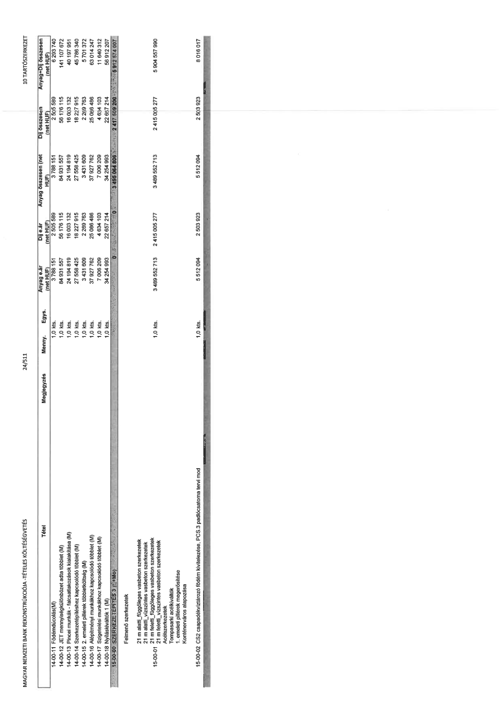

| Tétel | Megjegyzés | Menny. | Egys. | Anyag e.ár (net HUF) | Díj e.ár (net HUF) | Anyag összesen (net HUF) | Díj összesen (net HUF) | Anyag+Díj összesen (net HUF) |
|---|---|---|---|---|---|---|---|---|
| 14-00-11 | Földvisszatöltés(M) | 1,0 | kls. | 3 788 151 | 2 505 589 | 3 788 151 | 2 505 589 | 6 293 740 |
| 14-00-12 | ... földmunkák különbözet adta többlet (M) | 1,0 | kls. | 84 034 557 | 56 160 115 | 84 034 557 | 56 160 115 | 140 194 672 |
| 14-00-13 | Pincei munkák - falcsatlakozások kialakítása (M) | 1,0 | kls. | 24 194 819 | 16 003 132 | 24 194 819 | 16 003 132 | 40 197 951 |
| 14-00-14 | Szerkezetépítéshez kapcsolódó többlet (M) | 1,0 | kls. | 27 558 425 | 18 227 915 | 27 558 425 | 18 227 915 | 45 786 340 |
| 14-00-15 | 2. emeleti pillérek többletköltség (M) | 1,0 | kls. | 3 431 609 | 2 269 763 | 3 431 609 | 2 269 763 | 5 701 372 |
| 14-00-16 | Alépítményi munkákhoz kapcsolódó többlet (M) | 1,0 | kls. | 37 927 762 | 25 086 486 | 37 927 762 | 25 086 486 | 63 014 247 |
| 14-00-17 | Szigetelési munkákhoz kapcsolódó többlet (M) | 1,0 | kls. | 7 006 209 | 4 634 103 | 7 006 209 | 4 634 103 | 11 640 312 |
| 14-00-18 | Nyíláskiváltók 1 (M) | 1,0 | kls. | 34 254 983 | 22 657 224 | 34 254 983 | 22 657 224 | 56 912 207 |
| 14-00-00 | SZERKEZETÉPÍTÉS 1 (3 +M0) | NaN | NaN | 0 | 0 | 3 494 664 806 | 2 417 909 200 | 5 912 574 007 |
| 15-00-01 | Fölmenő szerkezetek: 21 m alatti, függőleges vasbeton szerkezetek; 21 m alatti, vízszintes vasbeton szerkezetek; 21 m feletti, függőleges vasbeton szerkezetek; 21 m feletti, vízszintes vasbeton szerkezetek; Acélszerkezetek; Tompasarki acélkiváltók; 1. emeleti pillérek megerősítése; 21 m feletti pillérek többletköltség (M); Konténerváros alapozása | 1,0 | kls. | 3 489 552 713 | 2 415 005 277 | 3 489 552 713 | 2 415 005 277 | 5 904 557 990 |
| 15-00-02 | CS2 csapadékvíztározó födém kivitelezése, PCS.3 padlócsatorna tervi mod | 1,0 | kls. | 5 512 094 | 2 503 923 | 5 512 094 | 2 503 923 | 8 016 017 |
